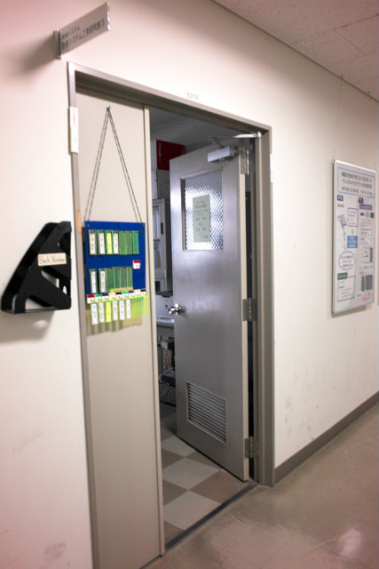

| ・英語口頭発表準備01 (H26.06.06) | |||
ISFV16でF木くんが発表するにあたって、英語口頭発表の練習をしました。去年英語口頭発表したN島くんとかN村くんは次の練習には参加予定。今回はM1A井くんと質問内容が容赦ない助教が参加。 |
|||
|

Fの部屋で練習 |
F木とA井くん | ||
|
そろそろいきますよ |
一回目で原稿まで準備出来てるし | ||
|
シアトルの準備もこれくらいしよっと |
細かい調整 | ||
|
まだ原稿は暗記中 |
増やすのはあれやけど、減らすのは良いかもね | ||
|
ちょっと台詞ながいかも |
A井くんのチェック | ||
|
助凶の質問ラッシュをメモ |
一回目でそこそこのクオリティ | ||